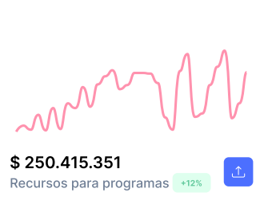
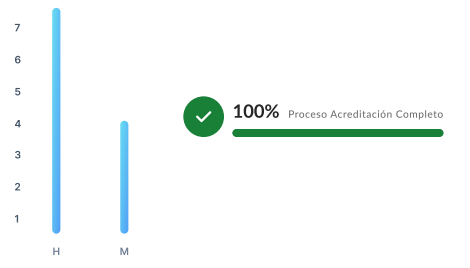

| Nombre | Rut | Fecha ingreso al programa | Nacionalidad | Pregrado (Licenciatura, título) | Institución procedencia (Pregrado) | Postgrado (Magister, doctorado) | Examen de Candidatura | Examen de Grado | Estado de avance (Semestre) |
|---|---|---|---|---|---|---|---|---|---|
| {{ item.nombre }} | {{item.rut}} | {{ item.fechaIngreso }} | {{ item.nacionalidad }} | {{item.pregrado}} | {{item.instiPreg}} | {{item.postgrado}} | {{item.examenCand}} | {{item.examenGrado}} | {{item.semestre}} |